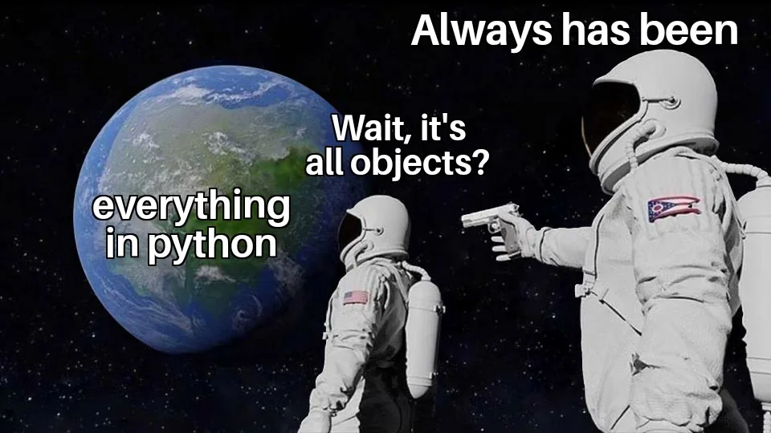

Objects and Classes#
DS212 — Object-Oriented Programming
Week 5: · Suggested class time: 5 hours (2-hour lecture + 3-hour laboratory)
ILO : Define classes, instantiate objects, and use constructors, attributes, methods, and standard libraries.


Fig. 2 https://www.reddit.com/r/ProgrammerHumor/comments/k04994/everything_in_python_is_an_object/#
“Everything” in Python is an Object#
All data types, whether primitive or user-defined—are instances of some class. This principle is a core feature of Python’s object-oriented programming (OOP) paradigm and allows for a consistent and flexible approach to handling data and operations.
In Python, objects and classes are fundamental concepts of object-oriented programming (OOP), which allows developers to structure their code in a modular, reusable, and scalable way. A class serves as a blueprint for creating objects, encapsulating data (attributes) and behaviors (methods) associated with a specific entity. An object, on the other hand, is an instance of a class, containing its own unique data while sharing the class’s structure and behavior.
The House Analogy#


The Blueprint (Class) – This represents the class because it defines the structure of the house. It specifies the number of rooms, dimensions, and layout, but it doesn’t decide the exact materials, colors, or furniture.
The Realized House (Object) – This is an object created from the blueprint. It follows the defined structure (same number of rooms and dimensions), but specific details like wall colors, flooring material, and decorations can vary.
This shows that objects can be different while still adhering to the class definition, just like how two houses built from the same blueprint can look slightly different due to material choices.
Classes and objects are fundamental concepts in object-oriented programming (OOP), and they play a significant role in learning and implementing data structures in Python for several reasons:
Abstraction and Encapsulation: Classes provide a way to encapsulate data (attributes) and behavior (methods) into a single unit. This allows you to abstract away the complexities of the data structure’s implementation, making it easier to understand and use. For example, you can encapsulate the details of how a linked list or a tree works within their respective classes.
Modularity and Reusability: With classes, you can create modular and reusable components. Once you define a class for a particular data structure, you can instantiate multiple objects (instances) of that class, each representing a separate instance of the data structure. This modularity enables you to reuse the same implementation across different parts of your program or even in different projects.
Customization and Extension: Classes allow you to define custom data structures tailored to specific requirements. You can define additional methods and properties within a class to extend its functionality as needed. For instance, you might want to add methods for searching, sorting, or other operations specific to your data structure implementation.
Polymorphism and Inheritance: These are advanced OOP concepts that can be utilized to enhance the flexibility and maintainability of your code. Polymorphism allows different classes to be treated interchangeably if they share a common interface. Inheritance enables you to create new classes (subclasses) based on existing ones (superclasses), inheriting their attributes and behaviors. This can be particularly useful when implementing variations or specialized versions of data structures.
Intuitive Syntax and Readability: Python’s syntax for defining and working with classes is straightforward and intuitive. This makes it easier for learners to understand and implement data structures using classes and objects. The syntax encourages clean and readable code, which is essential for comprehending complex data structures and algorithms.
And most importantly, python is an Object-Oriented Programming Language which means it supports the concepts of classes and objects as the primary means of structuring code.
All values, functions, and classes are objects in Python.
Keywords like
classanddefare not objects, but they are used to create objects.Functions, lambdas, and built-in methods are objects and can be assigned to variables.
You may verify and examine the methods of an object using the dir() or isinstance() function.
An Object is an instance of a Class. A class is like a blueprint while an instance is a copy of the class with actual values. It’s not an idea anymore, it’s an actual dog, like a dog of breed pug who’s seven years old. You can have many dogs to create many different instances, but without the class as a guide, you would be lost, not knowing what information is required.
Python Built-in Classes (Data Types)#
listtuplesetdict
Notice that there are no
()by the end of each keyword.
# the left-side is a class, the right side is an object
list == list()
False
# the left side is a class invoked, the right side is technically the same (literal representation).
list() == []
True
# a is an instance of the class called list()
a = list()
# b is an instance of the class called tuple()
b = tuple()
# c is an instance of the class called set()
c = set()
# d is an instance of the class called dict()
d = dict()
print(isinstance(a, list))
print(isinstance(b, tuple))
print(isinstance(c, set))
print(isinstance(d, dict))
True
True
True
True
# It can also be declared using similar format.
# literal representations
a = []
b = ()
c = {1,2,3}
d = {}
class Human:
def __init__(self, name, age, gender):
self.name = name
self.age = age
self.gender = gender
print(f'{self.name} is crying.')
def eat(self, somn):
print(f"{self.name} is eating {somn}")
def sleep(self):
print(f"{self.name} is sleeping now")
def walk(self, where):
print(f"{self.name} is walking towards {where} direction")
eve = Human('Eve', 18, 'Female')
adam = Human('Adam', 1928, 'Male')
george = Human('George', 7, 'Male')
Eve is crying.
Adam is crying.
George is crying.
Constructors#
When working with Object-Oriented Programming (OOP), creating an object often involves giving that object an initial state. For example, when creating a Student object, we may want to immediately provide information such as the student’s name, age, and program.
A constructor is associated with this initialization process. It allows an object to be prepared with the necessary attribute values when an instance of a class is created.
Consider the following class:
class Student:
def __init__(self, name, program):
self.name = name
self.program = program
An object can then be created as follows:
student1 = Student("Ana", "Data Science")
When Python evaluates this statement, a new Student object is created and its attributes are initialized using the values "Ana" and "Data Science".
The resulting object can be thought of as containing the following state:
student1
├── name → "Ana"
└── program → "Data Science"
Object Creation and Initialization#
Although __init__() is commonly referred to as the constructor in introductory Python programming, Python actually separates object creation from object initialization.
Two special methods are involved:
__new__()is responsible for creating the new object.__init__()is responsible for initializing the object after it has been created.
Conceptually, the process can be represented as:
Student("Ana", "Data Science")
│
▼
__new__()
│
│ creates the object
▼
Student object
│
▼
__init__()
│
│ initializes attributes
▼
Object ready for use
In most ordinary Python programs, programmers rarely need to modify __new__(). Instead, __init__() is the method commonly defined when designing classes.
The __init__() Method#
The __init__() method is a special method that Python automatically calls after a new instance has been created. Its primary purpose is to establish the initial state of an object.
The general structure is:
class ClassName:
def __init__(self, parameters):
self.attribute = parameters
For example:
class Dataset:
def __init__(self, name, rows):
self.name = name
self.rows = rows
We can create several objects from this class:
dataset1 = Dataset("Titanic", 891)
dataset2 = Dataset("Iris", 150)
Although both objects belong to the same Dataset class, they maintain their own attribute values.
print(dataset1.name)
print(dataset1.rows)
print(dataset2.name)
print(dataset2.rows)
Output:
Titanic
891
Iris
150
Therefore, a constructor makes it possible to create objects from the same class while giving each object a different initial state.
Understanding self#
The first parameter of __init__() is normally named self.
def __init__(self, name, rows):
self represents the current instance of the class being initialized.
For example:
dataset1 = Dataset("Titanic", 891)
During the initialization of dataset1, self refers to dataset1. Therefore:
self.name = name
essentially means:
Store the value of `name` as an attribute belonging
to this particular Dataset object.
This distinction is important because constructor parameters and object attributes are not necessarily the same thing.
Consider:
class Student:
def __init__(self, name):
self.name = name
In the statement:
self.name = name
the two uses of name have different roles:
self.name = name
↑ ↑
attribute parameter
stored inside received by
the object __init__()
The parameter name temporarily receives a value, while self.name becomes part of the object’s state.
Default Constructors#
A constructor may initialize objects using predefined values rather than requiring values from the programmer.
For example:
class Model:
def __init__(self):
self.name = "Unnamed Model"
self.trained = False
Creating an object requires no additional arguments:
model1 = Model()
print(model1.name)
print(model1.trained)
Output:
Unnamed Model
False
Every newly created Model begins with the same initial state unless its attributes are changed later.
A constructor of this form is often described as a default or non-parameterized constructor because no additional initialization arguments are required.
Parameterized Constructors#
A parameterized constructor accepts values when an object is created. These values are then used to establish the object’s initial attributes.
For example:
class DataScientist:
def __init__(self, name, specialization):
self.name = name
self.specialization = specialization
Objects can then be initialized differently:
ds1 = DataScientist("Maria", "Machine Learning")
ds2 = DataScientist("John", "Data Visualization")
The objects belong to the same class but contain different data:
DataScientist
│
├── ds1
│ ├── name → "Maria"
│ └── specialization → "Machine Learning"
│
└── ds2
├── name → "John"
└── specialization → "Data Visualization"
Parameterized constructors are particularly useful because objects often represent different entities that share the same structure but contain different information.
Constructors with Default Parameter Values#
Python also allows constructor parameters to have default values.
class Experiment:
def __init__(self, name, status="Not Started"):
self.name = name
self.status = status
We can create an object using the default value:
exp1 = Experiment("Image Classification")
or provide a different value:
exp2 = Experiment("Object Detection", "Completed")
Therefore:
print(exp1.status)
print(exp2.status)
produces:
Not Started
Completed
This approach makes constructors more flexible because some information can be required while other information can remain optional.
Why Constructors Are Important#
Constructors help ensure that an object begins its life in a meaningful and usable state.
Without a constructor, attributes may need to be assigned manually:
class Student:
pass
student1 = Student()
student1.name = "Ana"
student1.program = "Data Science"
student1.year = 2
Although this works, it is easy to forget an attribute:
student2 = Student()
student2.name = "Mark"
Now student2 does not have the same initialized information as student1.
Using a constructor provides a more consistent structure:
class Student:
def __init__(self, name, program, year):
self.name = name
self.program = program
self.year = year
Objects must now provide the required information when they are created:
student1 = Student("Ana", "Data Science", 2)
student2 = Student("Mark", "Data Science", 2)
In this way, constructors contribute to consistency, readability, and reliability when working with objects.
Attributes#
Attributes store an object’s state. Python distinguishes two kinds:
Kind |
Defined… |
Shared? |
Example |
|---|---|---|---|
Instance attribute |
inside methods, using |
each object has its own copy |
|
Class attribute |
directly in the class body |
shared by all objects of the class |
|
classDiagram
class Student {
+String university$
+String name
+String program
+list scores
}
In UML, a class (static) attribute is underlined; Mermaid shows it with a trailing $.
class Student:
university = "USTP" # class attribute: shared
def __init__(self, name, program):
self.name = name # instance attributes: per object
self.program = program
self.scores = []
ana = Student("Ana", "BSDS")
ben = Student("Ben", "BSIT")
print(ana.name, ana.university)
print(ben.name, ben.university)
Student.university = "USTP-CDO" # changing the class attribute...
print(ana.university, ben.university) # ...is seen by every object
print(vars(ana)) # instance attributes live in the object
Ana USTP
Ben USTP
USTP-CDO USTP-CDO
{'name': 'Ana', 'program': 'BSDS', 'scores': []}
Instance attributes can be read and changed using dot notation:
ana.program = "BS Data Science"
ana.scores.append(92)
print(ana.program, ana.scores)
print(ben.scores) # Ben's list is separate from Ana's
BS Data Science [92]
[]
A common mistake: mutable class attributes#
If a list is created as a class attribute, all objects share the same list:
class BadStudent:
scores = [] # shared by ALL objects!
def __init__(self, name):
self.name = name
a = BadStudent("Ana")
b = BadStudent("Ben")
a.scores.append(95)
print(b.scores) # Ben "has" Ana's score
[95]
Rule: values that belong to each object — especially lists and dictionaries — must be created in
__init__()withself..
Methods#
Methods define an object’s behavior. A method is a function defined inside a class; its first parameter, self, is the object the method is called on.
ana.add_score(92) is translated by Python into Student.add_score(ana, 92)
Methods generally fall into two groups:
Commands change the object’s state (
add_score(),enroll()).Queries compute and return information without changing state (
average(),is_passing()).
class Student:
passing_grade = 75
def __init__(self, name):
self.name = name
self.scores = []
def add_score(self, score): # command
self.scores.append(score)
def average(self): # query
if not self.scores:
return 0
return sum(self.scores) / len(self.scores)
def is_passing(self): # a method calling another method
return self.average() >= self.passing_grade
def summary(self):
status = "Passed" if self.is_passing() else "Failed"
return f"{self.name}: {self.average():.2f} ({status})"
ana = Student("Ana")
for score in (88, 92, 79):
ana.add_score(score)
print(ana.summary())
print(Student.add_score) # a function stored in the class
print(ana.add_score) # a "bound method": already tied to ana
Ana: 86.33 (Passed)
<function Student.add_score at 0x000001BE583302C0>
<bound method Student.add_score of <__main__.Student object at 0x000001BE5834AB70>>
Objects, Identity, and References#
Each object has an identity (id()), a type (type()), and a value (its attributes). Assigning an object to another variable does not copy it — both names refer to the same object.
first = Student("Carlo")
alias = first # same object, second name
other = Student("Carlo") # a different object with the same data
alias.add_score(90)
print(first.scores) # changed through 'alias'
print(first is alias, first is other)
print(type(first).__name__, isinstance(first, Student))
[90]
True False
Student True
Using Standard Libraries and Packages#
You rarely need to build everything yourself. Python’s standard library and third-party packages provide many ready-made classes. Using them is the same as using your own classes: import, instantiate, then call methods.
from collections import Counter, namedtuple
from datetime import date, timedelta
from pathlib import Path
import random
import statistics
# datetime: date objects with methods and arithmetic
deadline = date(2026, 9, 14)
print(deadline + timedelta(days=7), deadline.strftime("%A"))
# collections.Counter: an object that counts things
grades = ["A", "B", "A", "C", "B", "A"]
tally = Counter(grades)
print(tally.most_common(2))
# collections.namedtuple: a quick, lightweight class
Point = namedtuple("Point", ["lat", "lon"])
ustp = Point(8.4859, 124.6567)
print(ustp.lat, ustp)
# random: a Random object with its own reproducible state
rng = random.Random(42)
print(rng.sample(range(1, 51), 5))
# pathlib: path objects instead of plain strings
data_file = Path("data") / "raw" / "grades.csv"
print(data_file.name, data_file.suffix, data_file.parent)
print(statistics.mean([88, 92, 79]))
2026-09-21 Monday
[('A', 3), ('B', 2)]
8.4859 Point(lat=8.4859, lon=124.6567)
[41, 8, 2, 48, 18]
grades.csv .csv data\raw
86.33333333333333
Third-party packages are installed with pip and used in the same way. For example, pandas provides a DataFrame class:
import pandas as pd
df = pd.DataFrame({"name": ["Ana", "Ben", "Carlo"], "score": [92, 85, 78]})
print(type(df))
print(df["score"].mean())
df.sort_values("score")
<class 'pandas.DataFrame'>
85.0
| name | score | |
|---|---|---|
| 2 | Carlo | 78 |
| 1 | Ben | 85 |
| 0 | Ana | 92 |
Combining your classes with library classes#
Your own classes can use library objects as attributes. Here, a Course uses date and statistics internally:
from datetime import date
import statistics
class Course:
def __init__(self, code, start):
self.code = code
self.start = start # a date object
self.students = [] # Student objects
def enroll(self, student):
self.students.append(student)
def class_average(self):
return statistics.mean(s.average() for s in self.students)
def week_of(self, day):
return (day - self.start).days // 7 + 1
ds212 = Course("DS212", date(2026, 8, 10))
for name, scores in [("Ana", [92, 88]), ("Ben", [70, 74]), ("Carlo", [85, 90])]:
s = Student(name)
for score in scores:
s.add_score(score)
ds212.enroll(s)
print(f"{ds212.code} average: {ds212.class_average():.2f}")
print("Sept 14 is week", ds212.week_of(date(2026, 9, 14)))
DS212 average: 83.17
Sept 14 is week 6
Summary#
Term |
Meaning |
|---|---|
Class |
a blueprint describing attributes and methods |
Object / instance |
a concrete value created from a class |
Constructor |
|
Instance attribute |
data belonging to one object ( |
Class attribute |
data shared by all objects of a class |
Method |
a function defined in a class; receives the object as |
Standard library |
modules bundled with Python ( |
Package |
installable collection of modules ( |
References#
Downey, A. B. (2024). Think Python: How to think like a computer scientist (3rd ed.). O’Reilly Media. https://allendowney.github.io/ThinkPython/
Liang, Y. D. (2013). Introduction to programming using Python. Pearson.
Lott, S. F., & Phillips, D. (2021). Python object-oriented programming (4th ed.). Packt Publishing.
Python Software Foundation. (2026). The Python language reference: 3. Data model. https://docs.python.org/3/reference/datamodel.html
Python Software Foundation. (2026). The Python standard library. https://docs.python.org/3/library/index.html
Python Software Foundation. (2026). The Python tutorial: 9. Classes. https://docs.python.org/3/tutorial/classes.html